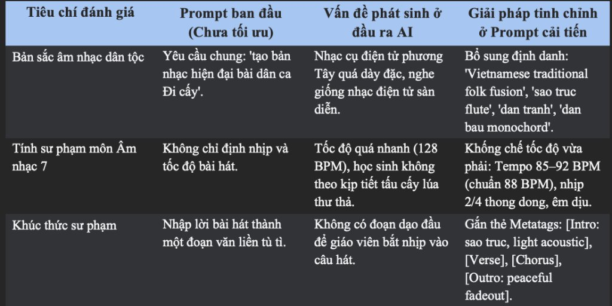

BÀI TẬP 3: VIẾT PROMPT HIỆU QUẢ CHO CÁC TÁC VỤ HỌC TẬP
🎯 a) Mục tiêu bài tập
Phát triển kỹ năng viết Prompt hiệu quả để tận dụng tối đa khả năng của các mô hình ngôn ngữ lớn (LLMs) và mô hình AI tạo sinh âm thanh trong học tập và giảng dạy âm nhạc.
Nội dung thực hành: Viết Prompt hiệu quả cho các tác vụ học tập — Thiết kế kịch bản phối khí bài dân ca Thanh Hóa "Đi cấy" phục vụ môn Âm nhạc lớp 7.
📌 1. Mục tiêu và Chiến lược thiết kế Prompt
Để khai thác tối đa khả năng của AI trong việc hỗ trợ trao đổi chuyên môn và thử nghiệm ý tưởng phối khí bài dân ca "Đi cấy" phục vụ giảng dạy Âm nhạc lớp 7, quá trình thực hành được chia làm 2 giai đoạn (2 kịch bản Prompt) dựa trên khung cấu trúc chuẩn R-T-C-O-F (Role – Vai trò, Task – Nhiệm vụ, Context – Bối cảnh, Output – Định dạng đầu ra, Few-shot/Constraints – Ràng buộc kỹ thuật):
- Kịch bản 1 (Tác vụ tư vấn học thuật & Lên kịch bản phối khí): Sử dụng AI ngôn ngữ (ChatGPT, Gemini, Claude) để phân tích khả năng ứng dụng AI, đề xuất ý tưởng hòa âm – phối khí và xây dựng cấu trúc bản phối phù hợp với tâm lý lứa tuổi học sinh lớp 7.
- Kịch bản 2 (Tác vụ tạo sinh âm thanh thực nghiệm): Chuyển hóa ý tưởng thành các thẻ lệnh (Style Tags & Lyrics Metatags) chuyên biệt dành cho AI tạo nhạc (Suno AI, Udio) để xuất ra bản phối thử nghiệm.
💬 2. Kịch bản 1: Prompt tư vấn chuyên môn và thiết kế cấu trúc bản phối
(Áp dụng cho các mô hình AI ngôn ngữ lớn như ChatGPT, Google Gemini, Claude)
a. Phân tích cấu trúc Prompt theo mô hình R-T-C-O-F:
b. Câu lệnh Prompt hoàn chỉnh (Bản chuẩn):
🎵 3. Kịch bản 2: Prompt tạo bản phối âm thanh thực nghiệm (Suno AI / Udio)
Khi sử dụng các nền tảng AI tạo âm thanh, câu lệnh cần được viết bằng tiếng Anh cô đọng, sử dụng các thuật ngữ âm nhạc chuẩn xác và thẻ cấu trúc ([Intro], [Verse], [Chorus], [Outro]) để AI nhận diện đúng tiết tấu và màu sắc nhạc cụ:
a. Prompt mô tả phong cách âm nhạc (Style of Music Prompt):
Dịch nghĩa: Hòa trộn dân ca truyền thống Việt Nam, tiết tấu Acoustic Lofi êm dịu, nhịp 2/4 thong thả, sáo trúc thanh bình, đàn tranh rải ngón duyên dáng, đàn bầu ngọt ngào, guitar mộc ấm áp, nhịp trống chillhop êm dịu, không gian làng quê đêm trăng thanh bình, trữ tình, thư thái, nhạc nền giáo dục cho dàn đồng ca THCS, tốc độ 88 nhịp/phút, âm thanh sắc nét.
b. Prompt cấu trúc lời và điều khiển nhạc cụ (Custom Lyrics & Metatags Prompt):
🎧 Trình phát trực tiếp (HTML5 Player):
Nhạc cụ chủ đạo: Sáo trúc, đàn tranh hòa âm cùng guitar mộc và nhịp lofi 88 BPM chuẩn sư phạm.
⚙️ 4. Đánh giá hiệu quả Prompt và Tinh chỉnh (Iterative Refinement)
Sau khi thử nghiệm bộ Prompt trên, quá trình đánh giá và tối ưu hóa câu lệnh được thực hiện để giải quyết các vấn đề thực tế phát sinh ở đầu ra AI:
| Tiêu chí đánh giá | Prompt ban đầu (Chưa tối ưu) | Vấn đề phát sinh ở đầu ra AI | Giải pháp tinh chỉnh ở Prompt cải tiến |
|---|---|---|---|
| Bản sắc âm nhạc dân tộc | Yêu cầu chung: 'tạo bản nhạc hiện đại bài dân ca Đi cấy'. | Nhạc cụ điện tử phương Tây quá dày đặc, nghe giống nhạc điện tử sàn diễn. | Bổ sung định danh: 'Vietnamese traditional folk fusion', 'sao truc flute', 'dan tranh', 'dan bau monochord'. |
| Tính sư phạm môn Âm nhạc 7 | Không chỉ định nhịp và tốc độ bài hát. | Tốc độ quá nhanh (128 BPM), học sinh không theo kịp tiết tấu cấy lúa thư thả. | Khống chế tốc độ vừa phải: Tempo 85–92 BPM (chuẩn 88 BPM), nhịp 2/4 thong dong, êm dịu. |
| Khúc thức sư phạm | Nhập lời bài hát thành một đoạn văn liền tù tì. | Không có đoạn dạo đầu để giáo viên bắt nhịp vào câu hát. | Gắn thẻ Metatags: [Intro: sao truc, light acoustic], [Verse], [Chorus], [Outro: peaceful fadeout]. |
📸 Ảnh chụp minh chứng bảng đánh giá và giải pháp tinh chỉnh Prompt:

📸 Minh chứng: Bảng đánh giá hiệu quả Prompt và giải pháp tinh chỉnh💡 5. Kết luận thực hành
Việc áp dụng kỹ thuật viết Prompt có cấu trúc (R-T-C-O-F) kết hợp với các ràng buộc chuyên ngành âm nhạc giúp biến AI từ một công cụ giải trí ngẫu nhiên thành một trợ lý đắc lực trong thiết kế học liệu số.
Qua đó, giáo viên môn Âm nhạc lớp 7 có thể chủ động tạo ra những bản phối mới mẻ, giàu tính thẩm mỹ cho bài "Đi cấy", vừa kích thích hứng thú học tập của học sinh, vừa bảo tồn trọn vẹn giá trị nghệ thuật dân gian truyền thống.